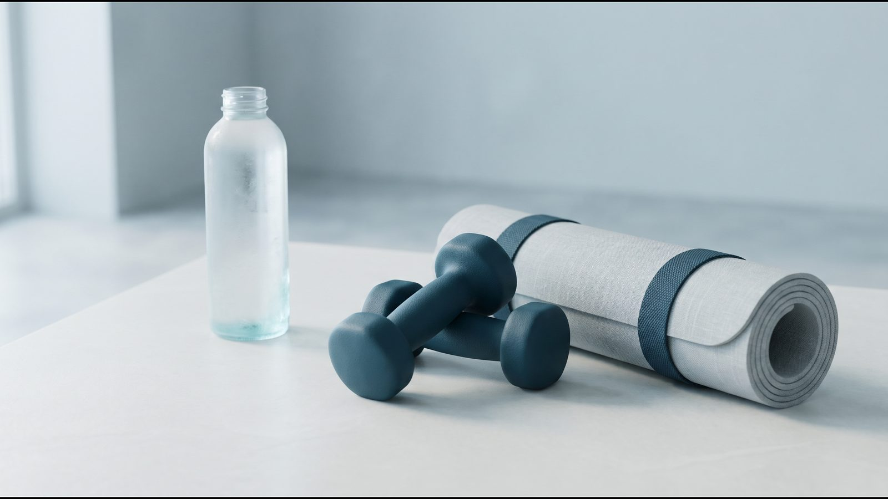
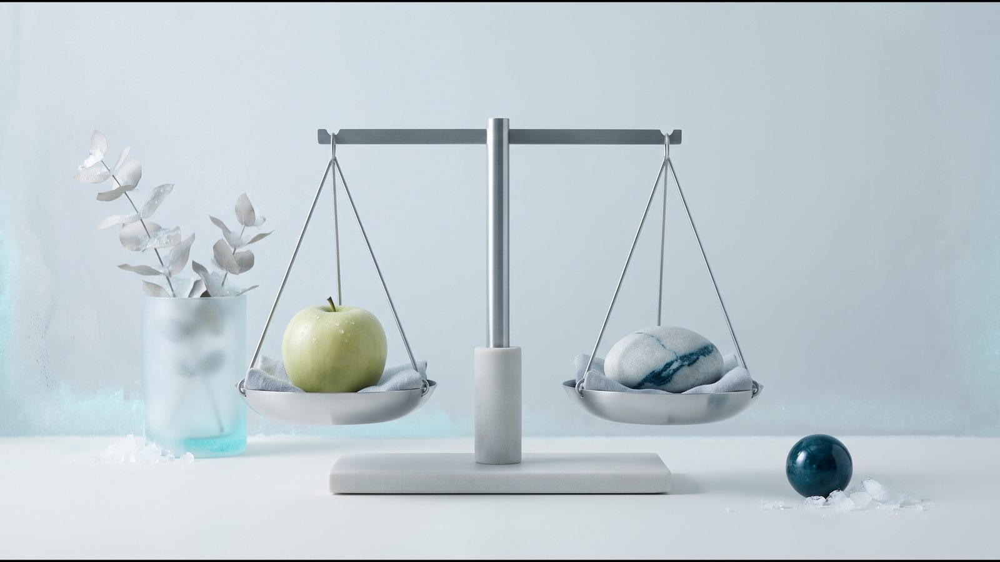

Результати Mounjaro® (тирзепатид): що показали дослідження SURMOUNT

Результати Mounjaro® коротко: скільки втрачали в SURMOUNT
Результати Mounjaro® (тирзепатид) щодо ваги оцінювали в програмі досліджень SURMOUNT. У SURMOUNT-1 (NEJM, 2022) дорослі з ожирінням або надмірною вагою без діабету за 72 тижні втратили в середньому 15,0 %, 19,5 % і 20,9 % маси тіла на дозах 5, 10 і 15 мг, а на плацебо 3,1 %. У людей з діабетом 2 типу (SURMOUNT-2, Lancet, 2023) середня втрата на дозах 10 і 15 мг була меншою: 12,8 % і 14,7 %. Це середні значення груп, а не результат, на який можна розраховувати заздалегідь.
Тирзепатид діє на рецептори двох гормонів, GIP і GLP-1, які впливають на апетит і рівень цукру в крові. Показання й дози тут наведено за європейською інструкцією (EMA). Для контролю ваги, зокрема її зниження й утримання, тирзепатид показаний дорослим з індексом маси тіла (ІМТ) від 30 або від 27 до 30 за наявності хоча б одного пов'язаного з вагою захворювання, разом зі зниженою калорійністю раціону і більшою фізичною активністю.
Програма SURMOUNT: хто брав участь, дози і строки
| Дослідження | Хто брав участь | Доза | Строк | Зміна маси тіла (журнал) |
|---|---|---|---|---|
| SURMOUNT-1 (NEJM, 2022) | 2539 дорослих без діабету з ІМТ ≥30 або ≥27 і ускладненням; середня вага 104,8 кг | 5, 10, 15 мг | 72 тижні, з них 20 тижнів поступового підвищення дози | −15,0 / −19,5 / −20,9 %; плацебо −3,1 % |
| SURMOUNT-1, 3 роки (NEJM, 2025) | 1032 учасники з предіабетом | 5, 10, 15 мг | 176 тижнів | −12,3 / −18,7 / −19,7 %; плацебо −1,3 % |
| SURMOUNT-2 (Lancet, 2023) | 938 дорослих з діабетом 2 типу та ІМТ ≥27; середня вага 100,7 кг | 10, 15 мг | 72 тижні | −12,8 / −14,7 %; плацебо −3,2 % |
| SURMOUNT-3 (Nat Med, 2023) | 579 дорослих, які за 12 тижнів інтенсивної програми способу життя втратили ≥5 % | максимальна переносима | 72 тижні після розподілу на групи | −18,4 %; плацебо +2,5 % |
| SURMOUNT-4 (JAMA, 2024) | 670 дорослих після 36 тижнів тирзепатиду (−20,9 %) | 10 або 15 мг | ще 52 тижні | продовження −5,5 %; заміна на плацебо +14,0 % |
| SURMOUNT-5 (NEJM, 2025) | 751 дорослий без діабету | тирзепатид 10/15 мг проти семаглутиду 1,7/2,4 мг | 72 тижні | −20,2 % проти −13,7 % |
У SURMOUNT-1 щонайменше 5 % маси втратили 85 %, 89 % і 91 % учасників на дозах 5, 10 і 15 мг проти 35 % на плацебо, щонайменше 20 % — 50 % і 57 % на дозах 10 і 15 мг проти 3 %. Отже, від 9 до 15 зі 100 учасників на тирзепатиді не досягли навіть 5 %. Обхват талії, за даними EMA, зменшився на 14,6–19,9 см проти 3,4 см на плацебо.
Змінювалися не лише кілограми. За зведеними даними EMA для SURMOUNT-1, систолічний тиск знизився на 8,1 мм рт. ст. проти 1,3, тригліцериди на 27,6 % проти 6,3 %, інсулін натще на 46,9 % проти 9,7 %. За три роки в учасників з предіабетом діабет 2 типу розвинувся в 1,3 % на тирзепатиді проти 13,3 % на плацебо (NEJM, 2025).
Найчастішими небажаними явищами в SURMOUNT-1 були шлунково-кишкові, переважно легкі або помірні; з'являлися вони здебільшого під час підвищення дози. Через небажані явища лікування припинили 4,3 %, 7,1 % і 6,2 % учасників на дозах 5, 10 і 15 мг проти 2,6 % на плацебо. Детальніше в статті Побічні ефекти Mounjaro®.
Пряме порівняння із семаглутидом (SURMOUNT-5) було відкритим: учасники знали, який препарат отримують. Розбір цього дослідження є в статті Mounjaro® чи Ozempic®.
Чому цифри в журналах і в інструкції EMA різні
Одне дослідження часто має дві версії результату. Основний аналіз у журнальних статтях враховує всіх розподілених у групи учасників разом із часом після припинення лікування. Інструкція EMA враховує здебільшого період, поки учасники отримували препарат, тому її цифри зазвичай трохи більші, приблизно на 1–3 відсоткові пункти. Для SURMOUNT-3 цифра EMA (−21,1 %) збігається з журнальною оцінкою для тих, хто продовжував лікування.
| Показник | Журнал | Інструкція EMA |
|---|---|---|
| SURMOUNT-1, 5 мг, 72 тижні | −15,0 % | −16,0 % |
| SURMOUNT-1, 15 мг, 72 тижні | −20,9 % | −22,5 % |
| SURMOUNT-2, 15 мг, 72 тижні | −14,7 % | −15,7 % |
| SURMOUNT-3, від розподілу на групи до 72-го тижня | −18,4 % | −21,1 % |
| SURMOUNT-4, плацебо з 36-го по 88-й тиждень | +14,0 % | +14,8 % |
| SURMOUNT-5, тирзепатид, 72 тижні | −20,2 % | −21,6 % |
Ці цифри одна одній не суперечать, але змішувати їх не можна. Для реалістичних очікувань ближча журнальна оцінка, бо вона враховує й тих, хто припинив лікування. У цій статті біля чисел вказано, звідки вони.
Склад тіла: що втрачали — жир чи м'язи
За піданалізом SURMOUNT-1 зі скануванням складу тіла (DXA, 160 учасників; Diabetes Obes Metab, 2025), приблизно 75 % втраченої на тирзепатиді ваги припадало на жир і 25 % на нежирову масу, як і на плацебо. Що це означає для м'язів, білка і тренувань, розібрано в статті Як зберегти м'язи на Ozempic® і Mounjaro®.

Обмеження даних і чому ваш результат може бути іншим
Програма SURMOUNT велика, але має межі, важливі для особистих очікувань.
- Популяція. У SURMOUNT-1 брали дорослих без діабету із середнім ІМТ 38,0; для ІМТ понад 40 даних про ліки мало (EASO, 2025).
- Діабет 2 типу. На тих самих дозах 10 і 15 мг втрата в SURMOUNT-2 була меншою, ніж у SURMOUNT-1: 12,8–14,7 % проти 19,5–20,9 %. Це різні дослідження, тож порівняння орієнтовне.
- Доза. Середня втрата зростала від 5 до 15 мг, хоча між 10 і 15 мг різниця невелика. За інструкцією EMA, підтримувальні дози становлять 5, 10 і 15 мг; яка з них потрібна і чи варто підвищувати, вирішує лікар з огляду на ефект і переносимість.
- Строк. Основні результати отримано за 72 тижні, трирічні дані є лише для учасників з предіабетом. За post-hoc аналізом SURMOUNT-1 (Clin Obes, 2025), серед учасників, які отримували препарат за схемою і втратили щонайменше 5 %, медіана виходу на плато за власним визначенням авторів становила 24–36 тижнів залежно від ІМТ; раніше 24-го тижня плато в цьому аналізі не оцінювали. Що це означає, пояснено в статті Плато на Ozempic® і Mounjaro®.
- Реальна практика і перерви. Поза дослідженнями ефект препаратів цієї групи дещо менший (ACLM, ASN, OMA, TOS, 2025). Після відміни вага поверталася: у SURMOUNT-4 ті, кого перевели на плацебо, за 52 тижні набрали 14,0 %, детальніше в статті Вага після відміни Ozempic® і Mounjaro®.
[КОММЕНТАРИЙ ВРАЧА: що лікар обговорює з пацієнтом на старті терапії тирзепатидом про реалістичні очікування щодо ваги і як оцінює проміжні результати]
Часті запитання
Скільки можна схуднути на Mounjaro®?
Назвати число заздалегідь дослідження не дозволяють. У SURMOUNT-1 середня втрата за 72 тижні становила 15,0–20,9 % залежно від дози в людей без діабету, а в SURMOUNT-2 у людей з діабетом 2 типу 12,8–14,7 %. Від 9 до 15 зі 100 учасників на тирзепатиді не досягли навіть 5 %.
Чи залежить результат від дози?
У середньому так: у SURMOUNT-1 втрата зростала від 5 до 15 мг, але різниця між 10 і 15 мг становила 1,4 відсоткового пункту. Через небажані явища на дозах 10 і 15 мг лікування припиняли частіше, ніж на 5 мг. Дозу підбирає лікар за ефектом і переносимістю, самостійно її не змінюють.
Чому в інструкції EMA цифри більші, ніж у статтях?
Інструкція EMA враховує здебільшого період, поки учасники отримували препарат, а основний аналіз у журналах враховує і час після його припинення. Для SURMOUNT-1 на дозі 15 мг це −22,5 % в інструкції та −20,9 % у NEJM. Обидві цифри коректні, але порівнювати між собою варто лише цифри з одного джерела.
Чи можна порівнювати цифри SURMOUNT і STEP?
Напряму ні: ці програми проводили в різних популяціях, з різною тривалістю і способами розрахунку. Серед досліджень SURMOUNT і STEP пряме порівняння є лише в SURMOUNT-5: за 72 тижні −20,2 % на тирзепатиді проти −13,7 % на семаглутиді 1,7–2,4 мг, тобто в дозах Wegovy®, а не Ozempic®. Це дослідження було відкритим: учасники знали, який препарат отримують.
Що далі
Перед стартом терапії ендокринолог оцінює показання, супутні хвороби і ліки, а під час курсу стежить за вагою, самопочуттям і переносимістю та коригує дозу. Як побудована терапія Mounjaro® у клініці, описано на сторінці Mounjaro®.
Джерела
- Mounjaro: EPAR Product Information. European Medicines Agency. https://www.ema.europa.eu/en/documents/product-information/mounjaro-epar-product-information_en.pdf
- Jastreboff AM et al. Tirzepatide Once Weekly for the Treatment of Obesity (SURMOUNT-1). N Engl J Med, 2022;387:205–216. https://doi.org/10.1056/NEJMoa2206038
- Jastreboff AM et al. Tirzepatide for Obesity Treatment and Diabetes Prevention. N Engl J Med, 2025;392:958–971. https://doi.org/10.1056/NEJMoa2410819
- Garvey WT et al. Tirzepatide once weekly for the treatment of obesity in people with type 2 diabetes (SURMOUNT-2). Lancet, 2023;402:613–626. https://doi.org/10.1016/S0140-6736(23)01200-X
- Wadden TA et al. Tirzepatide after intensive lifestyle intervention in adults with overweight or obesity: the SURMOUNT-3 phase 3 trial. Nat Med, 2023;29:2909–2918. https://doi.org/10.1038/s41591-023-02597-w
- Aronne LJ et al. Continued Treatment With Tirzepatide for Maintenance of Weight Reduction in Adults With Obesity: The SURMOUNT-4 Randomized Clinical Trial. JAMA, 2024;331(1):38–48. https://doi.org/10.1001/jama.2023.24945
- Aronne LJ et al. Tirzepatide as Compared with Semaglutide for the Treatment of Obesity (SURMOUNT-5). N Engl J Med, 2025;393(1):26–36. https://doi.org/10.1056/NEJMoa2416394
- Look M et al. Body composition changes during weight reduction with tirzepatide in the SURMOUNT-1 study of adults with obesity or overweight. Diabetes Obes Metab, 2025;27(5):2720–2729. https://doi.org/10.1111/dom.16275
- Horn DB et al. Time to weight plateau with tirzepatide treatment in the SURMOUNT-1 and SURMOUNT-4 clinical trials. Clin Obes, 2025. https://doi.org/10.1111/cob.12734
- McGowan B, Ciudin A et al. Framework for the pharmacological treatment of obesity and its complications from the European Association for the Study of Obesity (EASO). Nat Med, 2025;31:3229–3232. https://www.nature.com/articles/s41591-025-03765-w
- Mozaffarian D et al. Nutritional priorities to support GLP-1 therapy for obesity: a joint Advisory from ACLM, ASN, OMA and TOS. Am J Clin Nutr, 2025;122(1):344–367. https://pubmed.ncbi.nlm.nih.gov/40450457/
Матеріал має інформаційний характер і не замінює консультацію лікаря. Препарати призначає лікар після консультації.
Читайте також
